Tyrannosaurus rex
Khủng long bạo chúa kỷ Phấn trắng
Tổng quan
Kỷ
Cretaceous
Họ
Tyrannosauridae
Chi
Tyrannosaurus
Dài
13 m
Cao
4 m
Nặng
9 tấn
Thức ăn
Tyrannosaurus, còn được gọi là Khủng long bạo chúa trong văn hóa đại chúng, là một chi khủng long chân thú sống vào cuối kỷ Phấn Trắng. Chi này chỉ gồm một loài duy nhất là Tyrannosaurus rex.
Nguồn: wikipedia.org
Phân bố
Phía Tây của Bắc Mỹ
Thông tin thêm về Tyrannosaurus rex
Tên khoa học
Henry Fairfield Osborn, chủ tịch của Bảo tàng Lịch sử Tự nhiên Hoa Kỳ, đặt tên Tyrannosaurus rex (thường rút gọn là T. rex) vào năm 1905. Tên gọi của chi có nguồn gốc từ tiếng Hy Lạp τύραννος (tyrannos, có nghĩa là "bạo chúa") và σαῦρος (sauros, có nghĩa là "thằn lằn"). Osborn đã sử dụng từ tiếng La tinh rex, có nghĩa là "vua", cho tên cụ thể. Do đó, toàn bộ danh pháp hai phần dịch thành "khủng long bạo chúa", nhấn mạnh kích thước to lớn của con vật và nhận thức được sự thống trị của nó so với các loài khác trong thời gian đó.
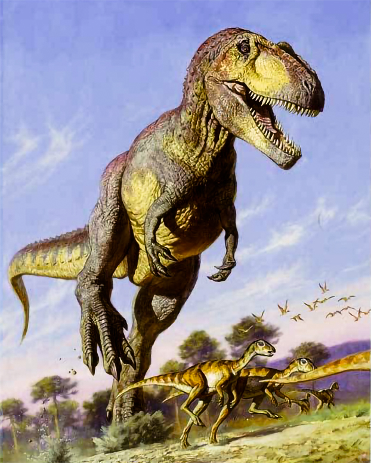Kích thước
T. rex là một trong số các động vật ăn thịt trên cạn lớn nhất mọi thời đại. Mẫu vật hoàn chỉnh lớn nhất, trưng bày ở bảo tàng lịch sử tự nhiên Field với số hiệu FMNH PR2081 và có biệt danh "Sue", dài 13 mét (43 ft), và cao 4 mét (13 ft) ngang hông.
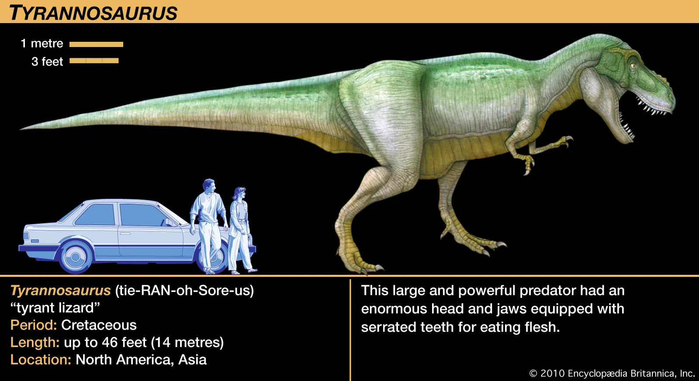Mẫu vật T. rex lớn nhất được ghi nhận, có biệt danh là "Scotty", chỉ nặng dưới 20.000 pound (khoảng 9 tấn) khi nó còn sống, nhưng các tác giả của nghiên cứu nói rằng những con T. rex khác có thể nặng tới 33.000 pound (15 tấn). Và với kích thước này, nó thực sự nặng hơn hai con voi đồng cỏ châu Phi cộng lại.
Ngoại hình
T. rex được biết đến với một cơ thể vạm vỡ, phần đầu(hộp sọ) lớn và giữ thăng bằng bởi cái đuôi dài, nặng. So với hai chi sau to khỏe, chi trước của T. rex thì ngắn nhưng đặc biệt mạnh so với kích thước của nó và có hai ngón có móng vuốt sắc nhọn.
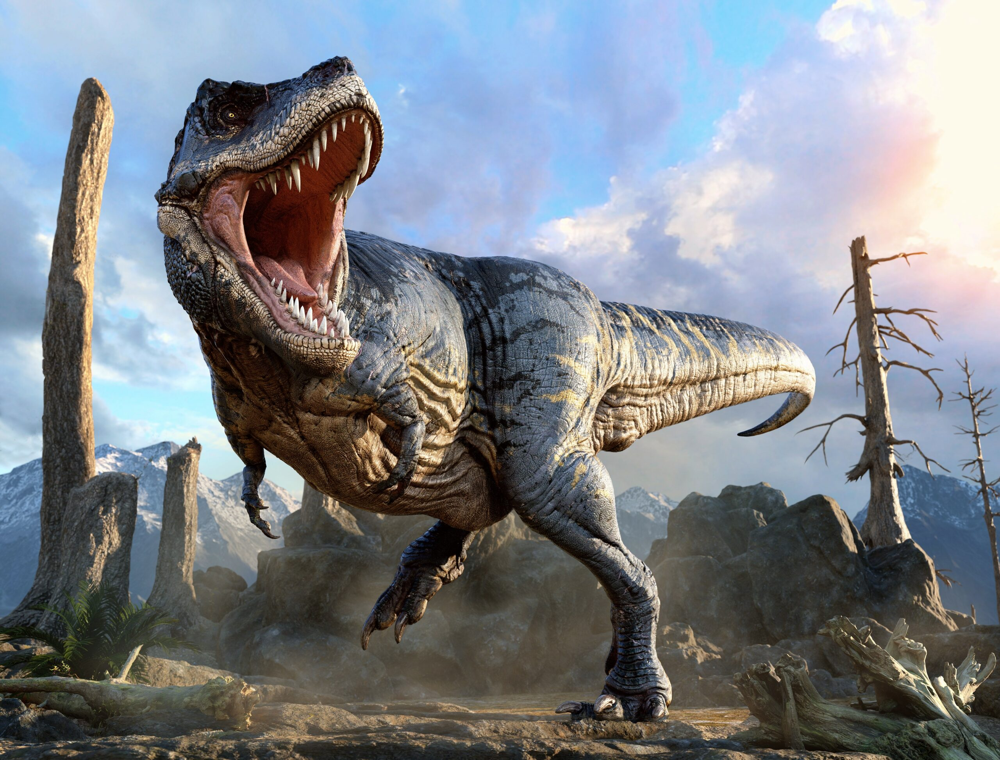Chế độ ăn và săn mồi
Như các loài bạo long chuẩn (Tyrannosauridae) khác, T. rex là loài ăn thịt đi bằng hai chân với khả năng săn mồi xuất sắc. Con mồi của chúng là động vật sống và xác thối, đôi khi chúng còn ăn thịt lẫn nhau.
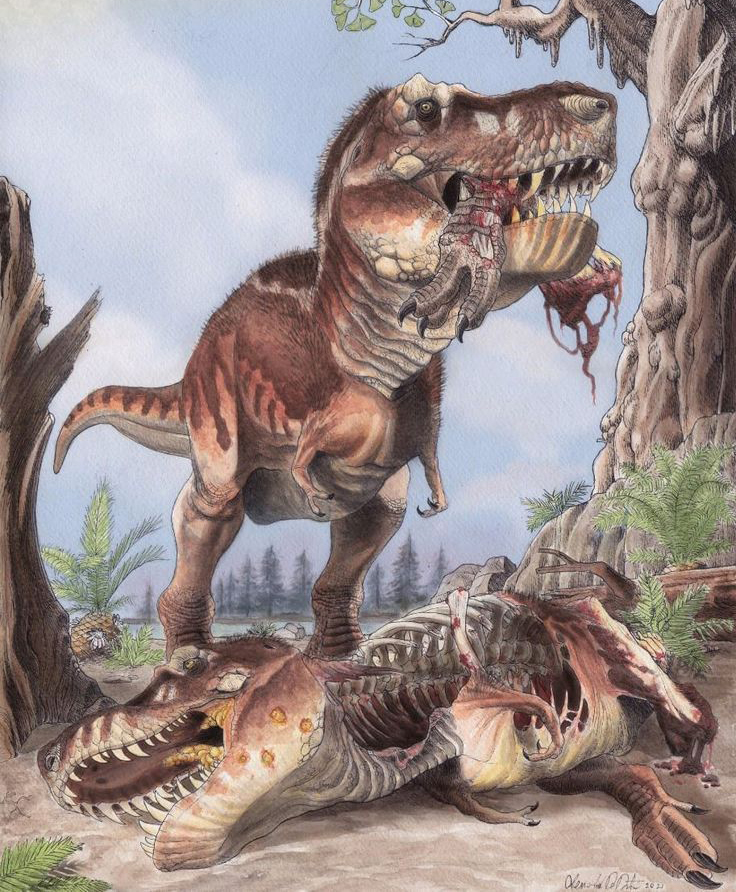Loài động vật ăn thịt hung dữ này được cấu tạo tối ưu để nhai ngấu nghiến bữa ăn của nó, với hộp sọ cứng cho phép nó dồn toàn bộ lực cơ bắp vào một lần cắn, tạo ra lực ép lên tới sáu tấn. Loài khủng long này sử dụng 60 chiếc răng cưa, mỗi chiếc dài khoảng 8 inch, để đâm và kẹp chặt thịt, hất tung con mồi lên không trung và nuốt chửng cả con mồi.
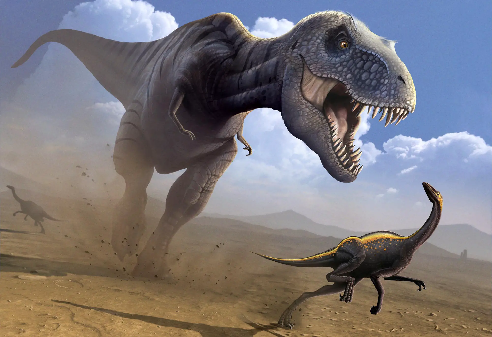Kỷ nguyên
T. rex là một chi khủng long chân thú sống vào cuối kỷ Phấn Trắng. Hóa thạch của Tyrannosaurus được tìm thấy trong các thành hệ địa chất có niên đại tầng Maastricht, khoảng 67-65,5 triệu năm về trước.
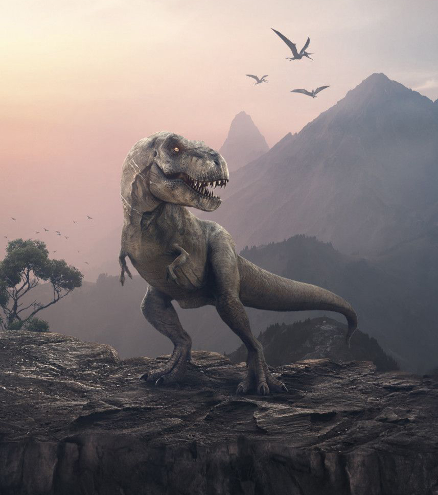Phân bố
T. rex là loài khủng long sống trên cạn. Loài ăn thịt nổi tiếng này đã thống trị các thung lũng sông có rừng ở phía tây Bắc Mỹ, khi đó là một lục địa đảo, tên là Laramidia.

Khám phá
Những mẫu vật răng đầu tiên được cho là của T. rex đã được tìm thấy vào năm 1874 bởi Arthur Lakes gần Golden, Colorado. Vào đầu những năm 1890, John Bell Hatcher đã thu thập các phần tử postcranial ở miền đông Wyoming. Các hóa thạch được cho là của một loài Ornithomimus lớn (O. grandis) nhưng bây giờ được coi là của T. rex.
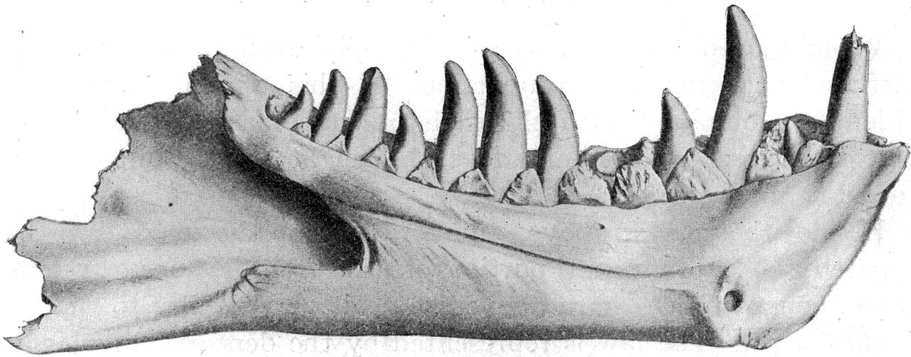Sue Hendrickson, nhà cổ sinh vật học nghiệp dư, đã khám phá ra bộ xương hóa thạch Tyrannosaurus hoàn chỉnh nhất (khoảng 85%) và bộ xương hóa thạch Tyrannosaurus lớn nhất được biết đến tại thành hệ Hell Creek, Nam Dakota, vào ngày 12 tháng 8 năm 1990. Con Tyrannosaurus, có biệt danh Sue lấy theo tên của cô.
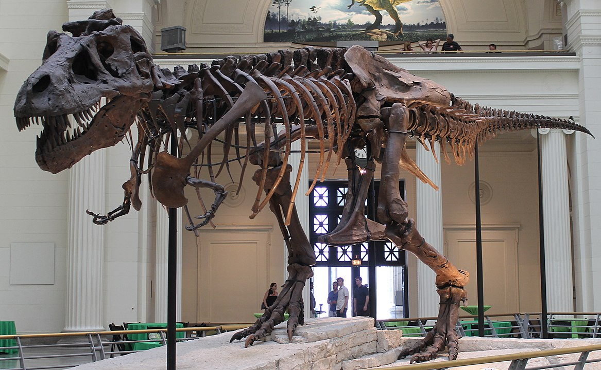Điều hòa thân nhiệt
Khủng long bạo chúa có sẵn máy điều hòa nhiệt độ trong đầu. Các nghiên cứu mới nhất cho thấy trong hộp sọ của T-Rex có bộ phận mang chức năng giống máy lạnh, để giữ cho bản thân không bị quá nóng trong khi nghiền nát con mồi bằng bộ hàm to lớn, loài vật khổng lồ này có lỗ thông hơi trên đầu để giúp não giữ mát, tương tự như lỗ thông hơi ở cá sấu Mỹ.
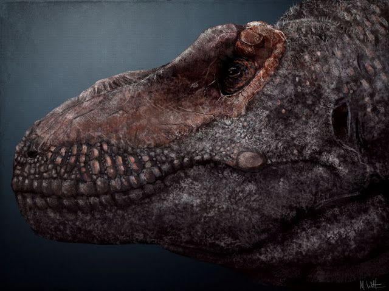Sự tuyệt chủng
Bất chấp tất cả những lợi thế của nó, T. rex không phải là đối thủ của sự kiện tuyệt chủng hàng loạt đã cướp đi 3/4 sự sống trên Trái đất 66 triệu năm trước. Trận đại hồng thủy này xảy ra khi một tiểu hành tinh hoặc sao chổi có kích thước bằng một ngọn núi đâm sầm vào Trái đất, quét sạch T. rex cùng với phần còn lại của loài khủng long không phải chim và mang đến sự kết thúc đột ngột cho kỷ Phấn trắng.
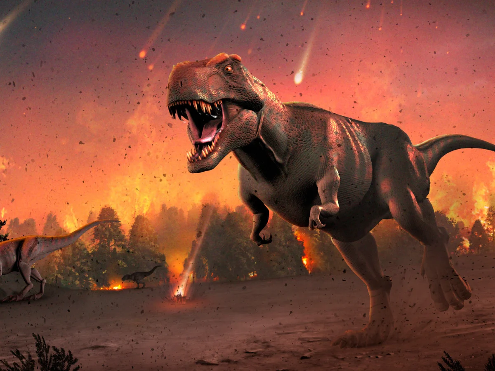